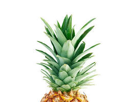

Beneficios de la Piña

Las piñas son una fruta tropical deliciosa y nutritiva, conocida por sus numerosos beneficios:
- Ricas en vitamina C, que fortalece el sistema inmunológico y actúa como antioxidante.
- Fuente de bromelina, una enzima que ayuda a la digestión y tiene propiedades antiinflamatorias.
- Contienen manganeso, que es importante para la salud ósea y el metabolismo.
- Proporcionan fibra, que mejora la digestión y ayuda a mantener niveles saludables de colesterol.
- Contienen antioxidantes, como flavonoides, que protegen contra el daño celular y reducen el riesgo de enfermedades crónicas.
¡Incorpora piñas a tu dieta para disfrutar de sus beneficios y mantener una buena salud!
Volver a la página principal